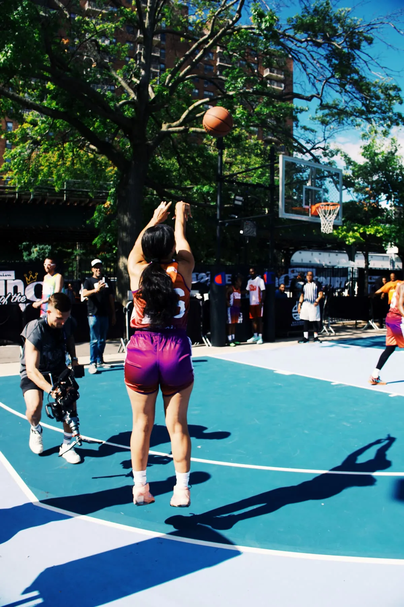

King of the Court x Champion NYC: A Million Views in a Day
Real time, lo-fi social for King of the Court and Champion in New York. Over a million views on the day.

- Client
- Champion NYC x King of the Court
- Location
- New York City
- Format
- Real time social coverage
- Views
- 1M+ on the day, 1.2M+ in 4 days
- Top videos
- 150K+ views in 24 hours
- Followers
- 800+ new in 4 days
- With
- Jed Toohey, Toohey Creative
- Photos & BTS
- Hanna Cruz, @lifewithfelise
- Date
King of the Court is an Australian streetball team. When they flew to New York for a collaboration with Champion, the Enforma team went too, working directly with Champion's New York City head office.
On the day we worked alongside Champion's own social media team on the ground, so between us every part of the event was covered. Mitch Lang from King of the Court brought the collaboration together and set up a lot of the opportunities we got to shoot.
The game plan was simple. Shoot lo-fi content in real time and get it up as fast as possible. A big play, a highlight, a quick interview courtside: if it was a moment, it was cut, captioned and posted while people were still talking about it.
It worked. The account passed a million views within the day, with several videos clearing 150,000 views inside 24 hours. Across the four days it went past 1.2 million views and picked up more than 800 new followers.
None of that is luck. Knowing what travels on social, how to caption it and when to post it is what turns good moments into viral ones. The camera is only half the job.
Big thanks to Mitch Lang for making it happen, and to Jed Toohey from Toohey Creative and Hanna Cruz from Life with Felise, who made sure we didn't miss a moment. For brands and events that want their audience talking while it's happening, this is what that looks like.
Start a project →